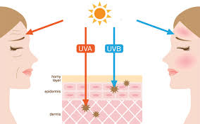

Educational Resources: Understanding UV Safety
Welcome to our educational hub. Here, you can learn about UV radiation, its impact on your health, and how to stay safe under the sun.
UV Radiation Explained
Ultraviolet (UV) radiation is a type of energy produced by the sun and artificial sources like tanning beds. It is divided into three types based on wavelength:
- UVA (320–400 nm): Long-wave UV rays that penetrate deep into the skin and contribute to aging and wrinkles.
- UVB (290–320 nm): Short-wave UV rays that are responsible for sunburn and play a key role in developing skin cancer.
- UVC (100–290 nm): The most dangerous type of UV radiation, but it is absorbed by the Earth’s atmosphere and does not reach the surface.
Understanding these different types of UV rays and their effects can help you take better care of your skin and overall health.
Explore our visual guide to see how UV rays affect different layers of your skin.
Understanding the UV Index
The UV Index is a scale that measures the strength of sunburn-producing ultraviolet radiation at a particular place and time. It is a helpful tool for planning outdoor activities and understanding the level of risk.
UV Index Levels and Safety Recommendations:
- 0-2 (Low): Minimal risk. Safe to be outside, but consider sunscreen if you have sensitive skin.
- 3-5 (Moderate): Moderate risk. Seek shade during midday hours and wear protective clothing.
- 6-7 (High): High risk. Cover up, use sunscreen, and limit your time in the sun.
- 8-10 (Very High): Very high risk. Take extra precautions—wear a wide-brimmed hat, sunglasses, and apply sunscreen frequently.
- 11+ (Extreme): Extreme risk. Avoid being outside during midday. Full protection is essential (clothing, hats, sunscreen, and shade).

By understanding the UV Index and planning your outdoor activities accordingly, you can reduce your risk of sunburn and long-term skin damage.
Sun Safety Tips
Protecting your skin from harmful UV exposure is essential for maintaining healthy skin. Follow these practical tips to stay safe under the sun:
- Use Broad-Spectrum Sunscreen: Choose a broad-spectrum sunscreen with SPF 30 or higher and reapply every two hours.
- Wear Protective Clothing: Opt for long sleeves, wide-brimmed hats, and sunglasses to protect your skin and eyes.
- Stay in the Shade: Whenever possible, seek shade, especially between 10 a.m. and 4 p.m., when UV rays are strongest.
- Check the UV Index: Before heading outside, check the local UV Index to understand the level of risk and plan accordingly.
- Avoid Tanning Beds: Artificial sources of UV radiation can be just as harmful as the sun and significantly increase the risk of skin cancer.
For more information on sun safety, check out these expert resources: